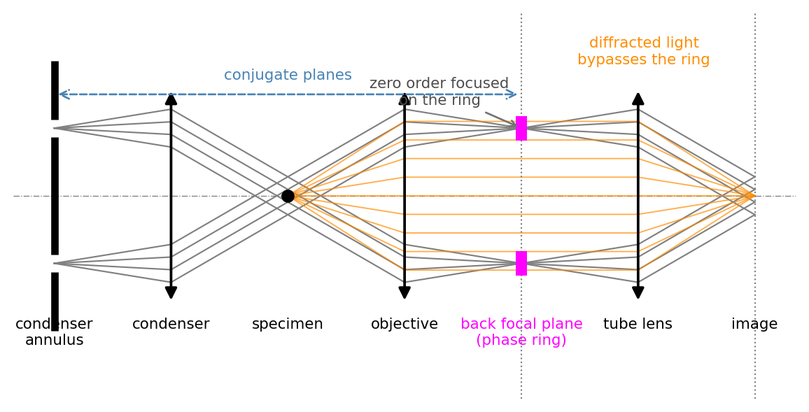
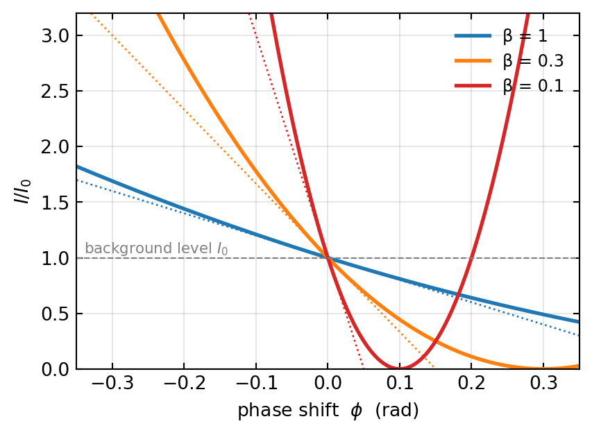
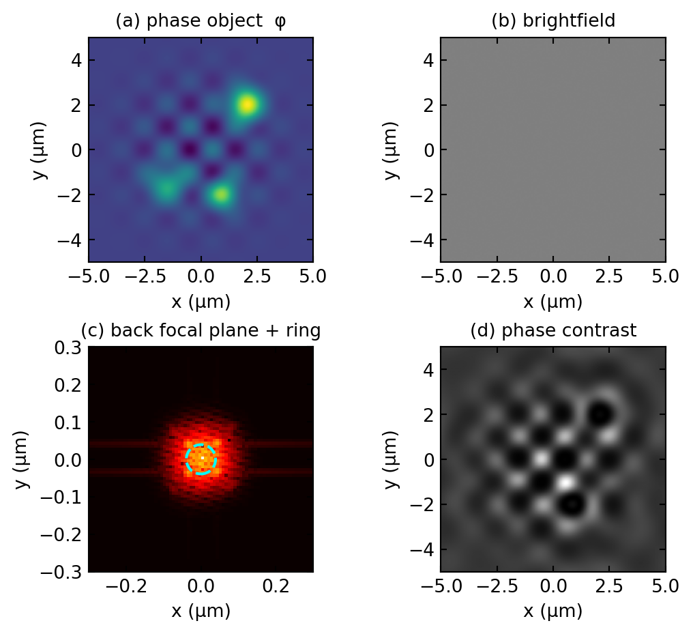
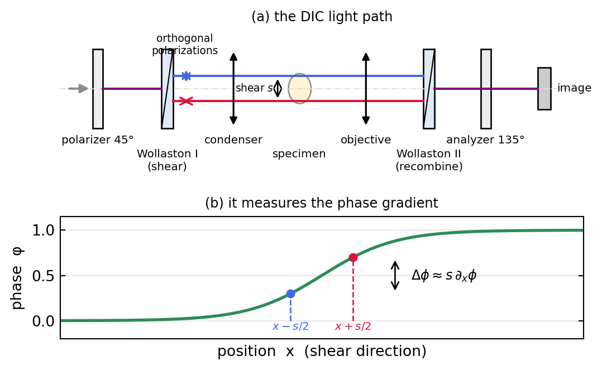
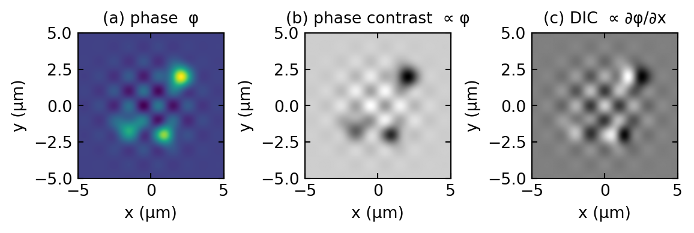
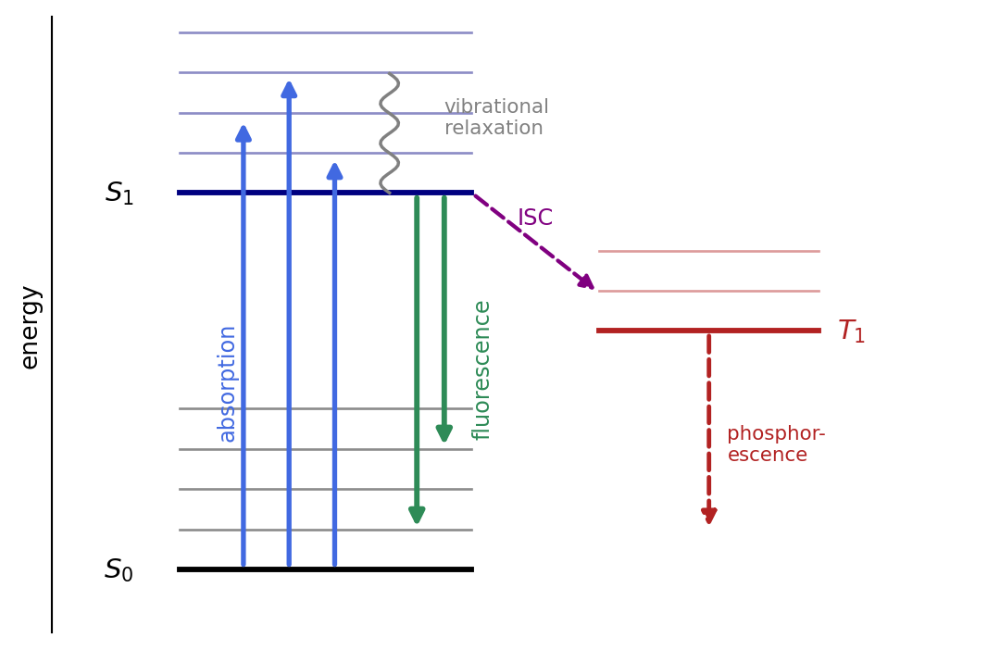
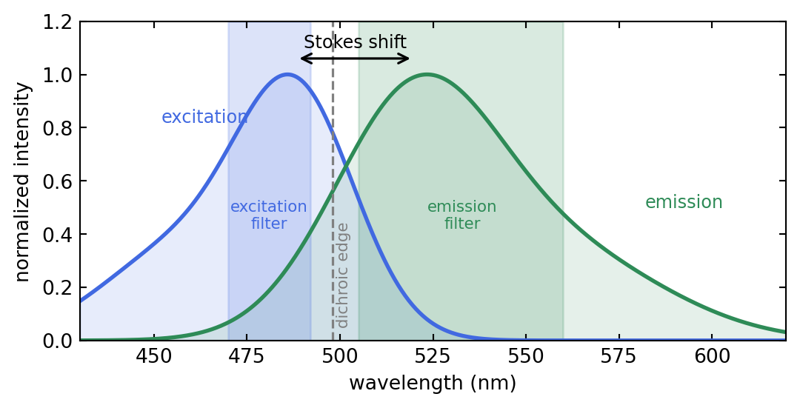
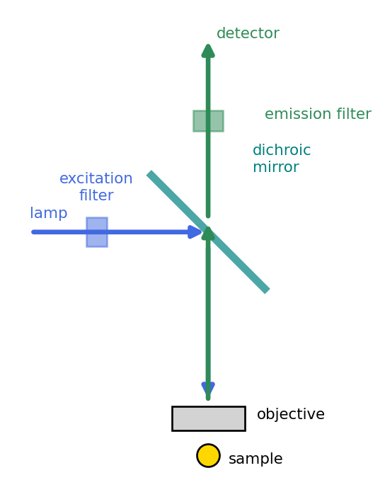

Microscopy II: Phase Contrast and Fluorescence
Introduction
The previous lecture, Brightfield & Darkfield, ended on a precise statement of the central problem of biological microscopy. A transparent specimen imposes a phase shift on the transmitted wave but no change in amplitude, and the scattered wave it produces is exactly 90 degrees out of phase with the unscattered background. Because intensity is blind to that quadrature, an unstained cell is invisible in brightfield. Darkfield made it visible by throwing the background away. This lecture pursues the two other great solutions to the same problem.
The first is to keep the background but rotate its phase so that it can interfere with the scattered light: this is Zernike phase contrast, and its close relative differential interference contrast (DIC), which detects the phase gradient instead. The second is to abandon transmitted light altogether and let the specimen emit its own light: this is fluorescence microscopy, whose three-dimensional extension, the confocal microscope, is taken up in the next lecture, Confocal Microscopy & Wavefront Control. Throughout, we lean on the Fourier picture built in the Fourier Optics lectures, where the pupil plane is the place where contrast is engineered.
Part A. Making Phase Visible
The Phase Problem in One Equation
We only recall the result derived in the previous lecture. A thin transparent specimen of refractive index \(n(x,y,z)\) in a medium \(n_0\) imprints the phase
\[\phi(x,y) = \frac{2\pi}{\lambda}\int_0^h [\,n(x,y,z) - n_0\,]\,dz ,\]
so the transmitted field is \(\mathcal{E} = A_0 e^{i\phi}\). For a weak phase object, \(\phi \ll 1\),
\[\mathcal{E} = A_0 e^{i\phi} \approx A_0\big(\underbrace{1}_{\text{background}} + \underbrace{i\phi}_{\text{scattered}}\big).\]
The intensity is \(|\mathcal{E}|^2 \approx A_0^2\) to first order, independent of \(\phi\), because the scattered amplitude \(i\phi\) is in quadrature with the background: their cross term is purely imaginary and does not appear in \(|\mathcal{E}|^2\). Every phase-contrast method is a recipe for defeating that factor of \(i\). The trick that gives the cleanest result, and earned Zernike the 1953 Nobel Prize, is to delay the background by a further quarter wave so that the two terms are back in phase.
Zernike Phase Contrast
The Principle
In the back focal plane of the objective the two parts of the field land in different places. The unscattered background is the bright zero-order spot at the center; the scattered light spreads out into the surrounding higher spatial frequencies. Zernike’s idea is to act only on the zero order, using a phase ring etched into a glass plate placed in (or conjugate to) the back focal plane. The ring does two things to the background:
- it retards (or advances) it by a quarter wave, a phase factor \(e^{\pm i\pi/2}\), which rotates the quadrature into alignment with the scattered light, and
- it attenuates it by a factor \(\beta \approx 0.1\) to \(0.3\), which boosts the relative weight of the weak scattered light and so increases contrast.
Figure 1.1 shows the placement. The trick that makes it work in practice is to illuminate not with a full cone but with a ring-shaped condenser annulus, so that the undiffracted light is focused into a thin ring in the back focal plane, exactly where the phase plate carries its matching ring. The diffracted light, leaving the specimen at other angles, spreads across the whole pupil and largely misses the ring. The annulus and the ring are conjugate planes, which is why each objective needs a condenser annulus of the matching size.
Derivation of the Contrast
Write the field just after the pupil. The zero order \(A_0\) is multiplied by \(\beta e^{-i\pi/2} = -i\beta\) (positive phase contrast retards the background); the scattered part \(i\phi A_0\) passes unchanged. Transforming back to the image plane, the field is
\[\mathcal{E}' = -i\beta A_0 + i\phi A_0 = iA_0(\phi - \beta),\]
and the recorded intensity is
\[I = |\mathcal{E}'|^2 = A_0^2(\phi-\beta)^2 = I_0\left(1 - \frac{\phi}{\beta}\right)^2, \qquad I_0 = \beta^2 A_0^2 .\]
For a weak object this linearizes to
\[\,I(x,y) \approx I_0\left(1 - \frac{2\phi(x,y)}{\beta}\right).\]
Three things are worth reading off this result. The intensity now varies linearly with the phase, so the invisible has become visible. Regions of high refractive index (\(\phi>0\)) appear darker than the background, which is the defining feature of positive phase contrast. And the contrast is amplified by \(1/\beta\): attenuating the background tenfold multiplies the contrast tenfold. Figure 1.2 shows the full quadratic transfer curve and makes clear what the attenuation buys and what it costs.

The whole mechanism can be reproduced numerically by carrying a model phase object through a Fourier transform, multiplying the zero order by \(\beta e^{-i\pi/2}\), and transforming back. Figure 1.3 does exactly this and reproduces the analysis: the brightfield image is featureless, while the phase-contrast image renders the cells with strong contrast.

Positive and Negative Contrast
The sign of the quarter-wave shift sets the sign of the contrast. Retarding the background (\(e^{-i\pi/2}\)) gives positive phase contrast, in which dense structures (high \(n\)) are dark, the configuration of essentially all routine phase-contrast objectives. Advancing it (\(e^{+i\pi/2}\)) gives negative phase contrast, in which dense structures are bright; it is occasionally useful but rarely the default.
The Halo Artifact
Phase contrast has one unmistakable signature: a bright (or dark) halo outlining every structure. Its origin is geometric. The phase ring has a finite width and covers not only the zero order but also the lowest scattered spatial frequencies. Those low frequencies, which describe the slow, large-scale part of the specimen, are therefore treated like the background instead of like signal, and their mishandling appears in the image as a glow hugging every edge. The halo is worst at sharp, high-contrast boundaries and is the reason phase contrast is read qualitatively rather than quantitatively.
Practical tips for phase contrast
- Match the ring to the objective. Each phase objective has its own annulus size (Ph1, Ph2, Ph3). The condenser annulus must be the matching one, and a 40x Ph2 objective will not work with a Ph1 annulus.
- Align the annulus. Remove an eyepiece or insert the Bertrand lens to look at the back focal plane, and superimpose the bright condenser annulus exactly on the dark objective ring. Misalignment is the most common reason for poor contrast.
- Use thin specimens. The linear regime is \(\phi \lesssim \beta\); thick or very dense objects over-modulate (Figure 1.2) and the image inverts or saturates.
- Expect halos. Do not interpret the bright rim around a nucleus as a real structure.
Differential Interference Contrast (DIC / Nomarski)
Principle
DIC attacks the phase problem by interfering the specimen wave with a laterally displaced copy of itself. A Wollaston (or Nomarski) prism splits the illumination into two orthogonally polarized beams separated by a tiny shear \(s\), much smaller than the resolution limit. The two beams traverse slightly different points of the specimen, a second prism recombines them, and an analyzer lets them interfere. What is measured is the difference in optical path between two neighboring points, that is, the phase gradient along the shear direction. Figure 1.4 sketches the light path and shows why.

The Gradient Contrast
The two sheared beams carry \(e^{i\phi(x,y)}\) and \(e^{i\phi(x-s,\,y)}\) (shear along \(x\)). After the analyzer, with a small bias retardation to set the operating point, the intensity is
\[I \propto \big|\,e^{i\phi(x,y)} + e^{i\phi(x-s,\,y)}\,\big|^2 .\]
For shear small compared with the scale of \(\phi\), expand \(\phi(x-s) \approx \phi(x) - s\,\partial_x\phi\), giving
\[I \propto 1 + \cos\!\big(s\,\partial_x\phi\big) \approx \text{const} + s\,\frac{\partial\phi}{\partial x}.\]
The contrast is proportional to the derivative of the phase along the shear, not the phase itself. A region where \(\phi\) rises in \(x\) looks bright on one side and dark on the other, which is what gives DIC its characteristic shaded, relief-like, pseudo-three-dimensional appearance, as if the specimen were lit from one side. Figure 1.5 contrasts what phase contrast and DIC make of the same object.

Fourier View and Comparison
In the Fourier language of the pupil-filtering section, taking a derivative along \(x\) multiplies the spectrum by \(ik_x\). The DIC transfer function is therefore
\[H_{\text{DIC}}(k_x, k_y) \propto k_x ,\]
a directional high-pass filter: it vanishes at zero frequency (uniform phase is invisible, so there is no halo from the background) and grows with the spatial-frequency component along the shear, which is why DIC enhances edges. This is the complement of Zernike phase contrast, which acts on the zero-order (DC) component and therefore renders \(\phi\) directly but pays for it with halos.
Phase contrast vs. DIC, in practice
- DIC needs polarized light and strain-free optics. Plastic culture dishes are birefringent and destroy DIC; phase contrast works through them, which is why phase contrast dominates routine cell-culture work.
- DIC is directional. Structures running along the shear direction show no contrast; rotate the specimen (or the shear) to reveal them.
- DIC gives clean optical sections of thicker specimens with no halo, at the cost of a more complex and expensive polarization train.
- Both are qualitative; for quantitative phase use interferometric or computational methods (beyond this lecture).
Part B. Fluorescence Microscopy
Transmitted-light contrast methods reveal structure but not chemistry: they cannot tell one protein from another. Fluorescence does, by tagging specific molecules with dyes that absorb at one wavelength and re-emit at a longer one. Because the emitted light can be separated from the excitation almost perfectly, fluorescence offers something the methods above cannot: a dark background against which only the labelled structures glow, with molecular specificity.
Fluorescence Fundamentals
The Jablonski Diagram
Absorption and emission are transitions between the electronic states of the fluorophore, summarized in the Jablonski diagram, Figure 2.1. A photon lifts the molecule from the ground state \(S_0\) to a vibrational level of the excited state \(S_1\). Within picoseconds the molecule relaxes nonradiatively to the lowest vibrational level of \(S_1\), losing a little energy as heat. From there, after a nanosecond-scale lifetime, it returns to \(S_0\) by emitting a fluorescence photon. Because energy was lost to vibrational relaxation both on the way up and on the way down, the emitted photon is less energetic, hence redder, than the absorbed one. A competing path, intersystem crossing to the triplet state \(T_1\), leads either to slow phosphorescence or, more often, to photochemistry that bleaches the dye.

The Stokes Shift and Spectral Separation
The wavelength gap between the absorption and emission peaks is the Stokes shift, \(\Delta\lambda = \lambda_\text{em} - \lambda_\text{ex}\), typically 20 to 50 nm for common dyes. It is what makes fluorescence microscopy possible: because emission is redder than excitation, a set of wavelength filters can send the bright excitation light to the sample while passing only the faint, redshifted emission to the detector. Figure 2.2 shows the spectra of a typical green dye together with the three filters that separate them.

The Filter Cube
The three filters are mounted together in a removable filter cube, Figure 2.3. Excitation light from the lamp passes the excitation filter, reflects off the dichroic mirror (a beam splitter that reflects short wavelengths and transmits long ones) down through the objective onto the sample. The objective then collects the emitted fluorescence, which is long enough in wavelength to pass straight through the dichroic, and the emission filter cleans up any residual excitation before the detector. Because the same objective both illuminates and collects, the geometry is called epifluorescence.

Practical tips for fluorescence
- Choose the cube to match the dye. The excitation band must sit on the dye’s absorption peak and the emission band on its emission peak; a green cube on a red dye gives nothing.
- Fight photobleaching. Every excitation cycle risks sending the molecule down the triplet path to permanent bleaching. Minimize exposure, lower the illumination intensity, and use antifade mounting media for fixed samples.
- Beware crosstalk (bleed-through). With several dyes, emission tails overlap; choose well-separated dyes and narrow emission filters, and image channels sequentially.
- Autofluorescence from the sample (and from plastic and glue) raises the background; it is usually bluer than most dyes, so red dyes help.
Widefield Fluorescence and the Out-of-Focus Problem
In the simplest fluorescence microscope the whole field is illuminated at once and the camera records the whole field at once. The in-focus image is the object convolved with the Airy point-spread function derived in the resolution section of the Fourier optics lecture, with the familiar lateral width \(0.61\,\lambda/\text{NA}\).
The difficulty is the third dimension. Fluorophores above and below the focal plane are also excited and also emit, and their out-of-focus light lands on the detector as a haze that washes out contrast. The axial extent of the PSF, the distance over which a point blurs along the optical axis, is
\[z_\text{R} \approx \frac{\lambda}{2\,\text{NA}^2},\]
only a few hundred nanometers (about 310 nm for NA = 0.9 at \(\lambda = 500\) nm), yet light from far outside this range still reaches the detector. In Fourier terms the three-dimensional OTF of a widefield microscope has a missing cone of unsupported spatial frequencies around the optical axis: low transverse frequencies at nonzero axial frequency are simply not transferred. This is the frequency-domain statement of poor optical sectioning, and it is why a widefield image of a thick sample looks foggy. The cure is to stop the out-of-focus light from ever reaching the detector. That is exactly what the confocal microscope does, and it, together with the aberrations that limit any real high-resolution instrument, is the subject of the next lecture, Confocal Microscopy & Wavefront Control.
Comparison of Techniques
| Technique | Contrast from | Lateral res. | Axial res. | 3D | Best for |
|---|---|---|---|---|---|
| Brightfield | absorption | ~0.2 µm | ~0.6 µm | no | stained cells |
| Phase contrast | phase φ | ~0.2 µm | ~0.6 µm | no | live transparent cells |
| DIC | phase gradient ∂φ | ~0.2 µm | ~0.6 µm | pseudo | relief of fine detail |
| Widefield fluorescence | emission | ~0.2 µm | ~0.5 µm | with deconvolution | thin labelled samples |
The sectioning methods that turn fluorescence into a true three-dimensional tool, confocal and two-photon microscopy, are developed in the next lecture, Confocal Microscopy & Wavefront Control.
Summary
The phase problem of brightfield has three classic solutions. Phase contrast rotates the quarter-wave quadrature of the background by acting on the zero order in the pupil and attenuating it, producing an intensity that varies linearly with the phase, \(I \approx I_0(1 - 2\phi/\beta)\), at the cost of a characteristic halo. DIC interferes the wave with a sheared copy of itself and so renders the phase gradient, giving relief-like, halo-free images that need polarized light and strain-free optics. Fluorescence sidesteps phase entirely: a dye absorbs and re-emits at a longer wavelength, and the Stokes shift lets a filter cube deliver a dark, molecularly specific image.
Widefield fluorescence is the simplest fluorescence microscope, but it suffers from out-of-focus haze, the missing cone of its three-dimensional OTF. That is the cliffhanger the next lecture resolves with the confocal microscope. Every one of these methods is, in the end, a specific manipulation of amplitude and phase in the pupil or focal plane, the unifying lesson of the Fourier picture.
| Technique | Operation in the Fourier / pupil plane | Result |
|---|---|---|
| Phase contrast | retard and attenuate the zero order | phase rendered as intensity |
| DIC | directional high-pass \(H \propto k_x\) | edges and relief, no halo |
| Widefield fluorescence | OTF = pupil autocorrelation | missing cone, weak sectioning |
Next lecture: Confocal Microscopy & Wavefront Control, which fills the missing cone by optical sectioning and then asks what happens when the pupil is no longer ideal.
Experimental Connections
Align a phase ring. On a phase microscope, view the back focal plane (Bertrand lens or remove an eyepiece) and superimpose the condenser annulus on the objective phase ring. Watch contrast collapse when they are misaligned: a direct lesson in Fourier-plane engineering.
Compare contrast modes on one specimen. Image unstained onion epidermis or cheek cells in brightfield, darkfield, phase contrast, and DIC. The differences show concretely how each method encodes a different property of the same object.
See the Stokes shift. Stain cells with a simple dye (acridine orange), set up the matching cube, and measure the excitation and emission filter bands with a spectrometer. Discuss why the Stokes shift makes the separation possible.
Measure photobleaching. Illuminate a fluorescent sample continuously and record intensity over time. The exponential decay gives the bleaching rate; compare dyes and connect to quantum yield and photostability.
Further Reading
The following references are linked to the central Resources & Recommended Reading page.
- Murphy & Davidson (2013): Fundamentals of Light Microscopy. The best practical account of phase contrast, DIC, and fluorescence.
- Mertz (2019): Introduction to Optical Microscopy. Modern treatment built on contrast-transfer functions.
- Saleh & Teich, Ch. 4.4 to 4.5: imaging systems, coherent and incoherent imaging.
- Goodman, Ch. 6: transfer functions for coherent and incoherent imaging.
- Gu (2000): Advanced Optical Imaging Theory, for confocal PSF theory in depth.
- Born & Wolf, Ch. 8: interference and the theory of image formation.
Introduction to Photonics: Microscopy II